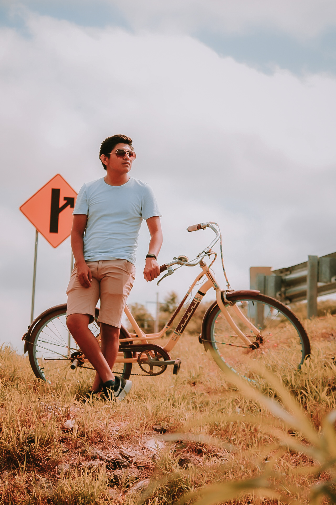

Sobre mí
- Joel Sánchez joven emprendedor, amante de la fotografía desde los 14 años, fue descubriendo su talento paulatinamente; La necesidad de conocer más sobre la fotografía lo acercó a diversos trabajos de fotógrafos reconocidos que sirvieron de inspiración para potenciar su talento.
- Sus primeras fotografías las realizó con un grupo de amigos en el año 2019 a modo de práctica con un celular de gama media; La creación de esta empresa se hizo realidad gracias al trabajo de dichos amigos, por lo que se decidió crear una cuenta en la red social Instagram, que tendría como nombre: J Capture Photo, en virtud de capturar momentos únicos.
- Logró adquirir su cámara réflex en el mes de noviembre del 2020, de tal manera que ayudó a explotar su talento al momento de hacer fotos; Tomó la iniciativa de prepararse mediante cursos sobre inicios de la fotografía y por medio de la lectura del libro titulado: "Fotografía desde cero".
- Después de 6 meses comenzó a realizar sesiones fotográficas al público en general, obteniendo excelentes fotos que se compartían en la red social Instagram de la empresa. Posteriormente a necesidad de promoción se creó una página en Facebook donde fue subiendo contenido de sus trabajos realizados. Así fue como poco a poco avanzó en este mundo de la fotografía.
- Dentro de sus trabajos destacados podemos mencionar que ha realizado fotos para grupos de bailes de su población, fotos publicitarias para negocios locales, fotos de eventos sociales, entre otros.
Él no lo ve como trabajo, lo ve como hobby, ama lo que hace, captura fotos con sentimientos y pasiones, lo disfruta, es feliz.
¿De dónde somos?
Somos de la localidad de Maxcanú la cual se ubica en el estado de Yucatán a una hora de Mérida.
Por el momento solo ofrecemos el servicio dentro y alrededor a menos de una hora de la localidad.